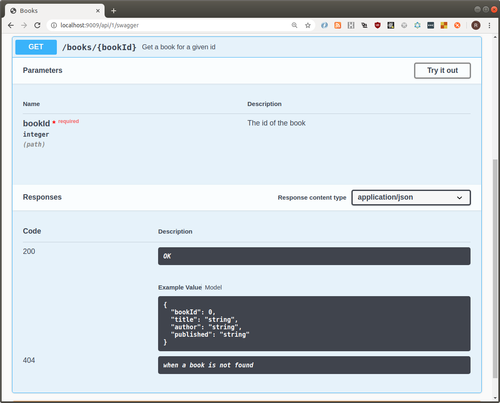

Usage
The router provided by this package maps the arguments and types of request handlers.
We will create a mock book repository.
Creating typed dictionaries
Here is the type of a book. We use TypedDict to allow automatic type discovery
from datetime import datetime
try:
# Available in 3.8
from typing import TypedDict # type:ignore
except:
# Available in 3.7
from typing_extensions import TypedDict
class Book(TypedDict):
"""A Book
Args:
book_id (int): The book id
title (str): The title
author (str): The author
published (datetime): The publication date
"""
book_id: int
title: str
author: str
published: datetimeNote: the docstring will be used to provide documentation for swagger.
Creating the API
Now we can build the API.
from typing import Dict, List
from urllib.error import HTTPError
BOOKS: Dict[int, Book] = {}
NEXT_ID: int = 0
async def get_books() -> List[Book]:
"""Get all the books.
This method gets all the books in the shop.
Returns:
List[Book]: All the books
"""
return list(BOOKS.values())
async def get_book(book_id: int) -> Book:
"""Get a book for a given id
Args:
book_id (int): The id of the book
Raises:
HTTPError: 404, when a book is not found
Returns:
Book: The book
"""
if book_id not in BOOKS:
raise HTTPError(None, 404, None, None, None)
return BOOKS[book_id]
async def create_book(
author: str,
title: str,
published: datetime
) -> int:
"""Add a book
Args:
author (str): The author
title (str): The title
published (datetime): The publication date
Returns:
int: The id of the new book
"""
NEXT_ID += 1
BOOKS[NEXT_ID] = Book(
book_id=NEXT_ID,
title=title,
author=author,
published=published
)
return NEXT_ID
async def update_book(
book_id: int,
author: str,
title: str,
published: datetime
) -> None:
"""Update a book
Args:
book_id (int): The id of the book to update
author (str): The new author
title (str): The title
published (datetime): The publication date
Raises:
HTTPError: 404, when a book is not found
"""
if book_id not in BOOKS:
raise HTTPError(None, 404, None, None, None)
BOOKS[book_id]['title'] = title
BOOKS[book_id]['author'] = author
BOOKS[book_id]['published'] = publishedWe can see that errors are handler by raising HTTPError
from the urllib.errors standard library package. A convention has been applied such that the status code MUST
appear before the message, separated by a comma.
Adding support for the REST router
Now we must create our application and add support for the router.
from bareasgi import Application
from bareasgi_rest import RestHttpRouter, add_swagger_ui
router = RestHttpRouter(
None,
title="Books",
version="1",
description="A book api",
base_path='/api/1',
tags=[
{
'name': 'Books',
'description': 'The book store API'
}
]
)
app = Application(http_router=router)
add_swagger_ui(app)Note the base_path argument can be used to prefix all
paths.
The RestHttpRouter is a subclass of the basic router, so
all those methods are also available.
Creating the routes
Now we can create the routes:
tags = ['Books']
router.add_rest({'GET'}, '/books', get_books,tags=tags)
router.add_rest({'GET'}, '/books/{bookId:int}', get_book, tags=tags)
router.add_rest({'POST'}, '/books', create_book, tags=tags, status_code=201)
router.add_rest({'PUT'}, '/books/{bookId:int}', update_book, tags=tags, status_code=204)First we should note that the paths will be prefixed with the
base_path provided to the router.
Referring back to the implementation of get_book we can
see that the camel-case path variable bookId has been
mapped to the snake-case book_id parameter. The JSON object provided in the body of the create_book will
similarly map camel-cased properties to the snake-cased
function parameters.
We can also see how the status codes have been overridden
for the POST and PUT endpoints, and all the routes
have the "Books" tag for grouping in the UI.
Serving the API
Finally we can serve the API:
import uvicorn
uvicorn.run(app, port=9009)Browsing to http://localhost/api/1/swagger we should see:

When we expand GET /books/{bookId} we can see all the
information provided in the docstring and typing has been
passed through to the swagger UI.
